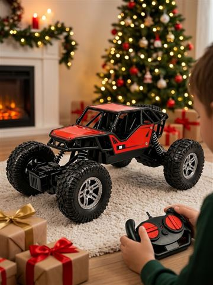
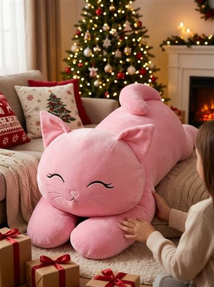
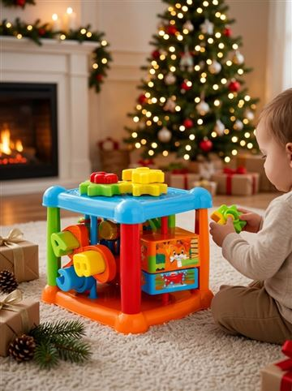
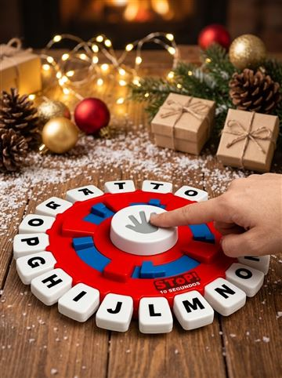

Presentes de Natal pra criança: brinquedos que mais vendem
#publi — Os botões são links de afiliado do Mercado Livre: posso ganhar uma comissão, sem custo extra pra você. Preço e prazo mudam: confira no anúncio.
Separei os presentes de Natal pra criança que mais vendem e têm nota boa no Mercado Livre, por idade.
Resumo rápido:
👶 Bebê (1 ano+): blocos de montar.
🧒 3 a 6 anos: dinossauros, capivara de pelúcia.
🚙 6+ anos: carrinho de controle remoto 4x4.
👨👩👧 Família: jogo Stop, desafio da corda.
👶 Bebê (1 ano+): blocos de montar.
🧒 3 a 6 anos: dinossauros, capivara de pelúcia.
🚙 6+ anos: carrinho de controle remoto 4x4.
👨👩👧 Família: jogo Stop, desafio da corda.
Os presentes






Dica de segurança
Sempre confira a idade indicada no anúncio, principalmente pra peças pequenas e brinquedos com bateria.
Perguntas frequentes
Qual o brinquedo mais vendido no Natal?
Pelúcias gigantes, carrinhos de controle remoto e jogos de família estão entre os mais procurados.
Como saber a idade certa?
Veja a faixa etária indicada no anúncio do produto.
Leia também
- Árvore de Natal completa barata: 3 opções que chegam rápido
- Presentes de Natal até R$ 50: 8 ideias que todo mundo gosta
- Presente de amigo secreto barato: ideias de R$ 20 a R$ 50
Mais achadinhos na nossa página de ofertas.